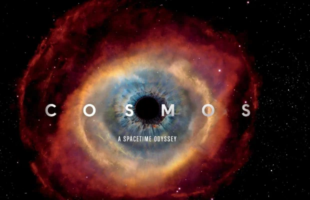

Neil deGrasse Tyson'ın sunduğu 2014 yapımı seri; evrenin oluşumundan yıldızlara, galaksilerden yaşamın kökenine uzanıyor. Carl Sagan'ın klasik Cosmos serisinin devamı olan yapım, bilimsel fikirleri görsel anlatımla geniş bir izleyici kitlesine ulaştırıyor.